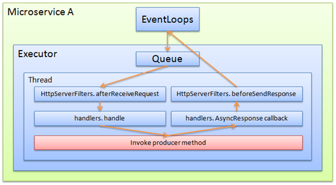
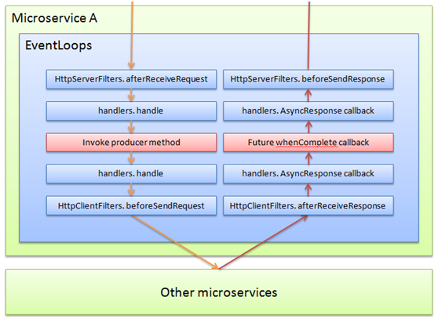

简单同步模式的Producer：
示例代码：
@GetMapping(path = "/hello/{name}")
public String hello(@PathVariable(name = "name") String name){
return "hello " + name;
}
与此对应的处理流程如下：

这是传统典型的工作模型，核心思想是不阻塞网络线程，将业务放在独立的线程中处理（为了简化表达，executor中只画一个线程）
一般情况下，此模式问题不大。
嵌套同步调用：
不是所有的业务都是简单处理一下，就可以直接应答，可能还需要调用其他微服务.
示例代码：
public interface Intf{
String hello(String name);
}
@GetMapping(path = "/hello/{name}")
public String hello(@PathVariable(name = "name") String name){
return "from remote: hello " + intf.hello(name);
}
与此对应的处理流程如下：

根据这个流程的特点，可以看到会产生以下结果：
-
因为是同步调用，在“Other microservices”未应答之前“Microservice A”的调用线程一直处于阻塞等待状态，不处理任何其他事务
-
当Executor中所有线程都在等待远程应答时，所有新的请求都只能在Queue中排队，得不到处理，此时整个系统相当于停止工作了
-
要增加处理能力，只能增加Executor中的线程数，而操作系统并不能无限地增加线程数，事实上增加线程数带来的收益是一个抛物线模型，超出一定的临界值后，系统的处理能力其实会下降，而这个临界值并不会太大
-
当业务逻辑中，需要多次进行远程同步操作时，会更加恶化这个现象
嵌套同步调用的“错误”优化：
针对前一场景，有人会认为将“Invoke producer method”丢进另一个线程池，可以解决问题，包括以下处理方式：
-
在producer method打标注@Async，由AOP负责将对该方法的调用丢进其他线程池去
-
在producer method内部通过业务代码转移线程
形成以下流程：
根据这个流程的特点，可以看到会产生以下结果：
-
“Invoke producer method”必须立即返回，否则Executor线程还是得不到释放
-
“Invoke producer method”必须提供一个新的机制告知调用流程自己的返回值，不是最终返回值（当前没有这个机制）
-
虽然Executor线程释放了，但是Customer Executor，其实还是阻塞住，在等待远端应答，整个系统的阻塞状态并没有得到改变；而且还凭空多了一次线程切换
-
该机制看上去，唯一的作用，是释放了executor线程，让executor线程有机会处理其他请求，这相当于隔离仓的概念，处理速度慢的业务不要影响其他业务；但是这个概念serviceComb是可以直接支持的，可以配置指定的业务方法独占全新的executor，这样整个流程就跟“嵌套同步调用”完全一样，流程更简单，而不需要在“Invoke producer method”层次来做这个事情
纯Reactive机制
示例代码：
public interface Intf{
CompletableFuture<String> hello(String name);
}
@GetMapping(path = "/hello/{name}")
public CompletableFuture<String> hello(@PathVariable(name = "name") String name){
CompletableFuture<String> future = new CompletableFuture<>();
intf.hello(name).whenComplete((result, exception) -> {
if (exception == null) {
future.complete("from remote: " + result);
return;
}
future.completeExceptionally(exception);
});
return future;
}
与此对应的处理流程如下：

-
与传统流程不同的是，所有功能都在eventloop中执行，并不会进行线程切换
-
橙色箭头走完后，对本线程的占用即完成了，不会阻塞等待应答，该线程可以处理其他任务
-
当收到远端应答后，由网络数据驱动开始走红色箭头的应答流程
-
只要有任务，线程就不会停止，会一直执行任务，可以充分利用cpu资源，也不会产生多余的线程切换，去无谓地消耗cpu。
因为同步模式下，需要大量的线程来提升并发度，而大量的线程又带来线程切换的额外消耗。
测试数据表明，reactive模式，只需要消耗同步模式不到一半的cpu，即可达到或超过同步模式的tps，并且时延更低。
混合Reactive机制
Reactvie要求：所有在eventloop中执行的逻辑，不允许有任何的阻塞动作，包括不限于wait、sleep、巨大循环、同步查询DB等等。
serviceComb底层是基于vertx的，vertx生态中有jdbc、mq、zooKeeper等等各种丰富组件的reactive驱动，一般情况下都可以满足要求。
但是有的场景下，确实有的同步操作无法避免，比如：
-
私有的安全加固的redis，只提供了同步驱动
-
较复杂的业务运算
-
……
此时，可以将这些同步的逻辑抽取出来放到线程池中去处理，而其他部分仍然使用reactive的流程。
关于reactive的一些说明：
-
Producer：
-
producer是否使用reactive与consumer如何调用，没有任何联系
-
当operation返回值为CompletableFuture类型时，默认此operation工作于reactive模式，此时如果需要强制此operation工作于线程池模式，需要在microservice.yaml中明确配置；假设某operation，其schemaId为sid，operationId为asyncQuery，则需要进行以下配置：
servicecomb:
executors:
Provider:
sid.asyncQuery: cse.executor.groupThreadPool
这里的cse.executor.groupThreadPool是serviceComb内置的默认线程池，用户可以任意指定为自己的定制线程池。
-
Consumer：
-
consumer是否使用reactive与producer如何实现，没有任何联系
-
当前只支持透明RPC模式，使用JDK原生的CompletableFuture来承载此功能
completableFuture的when、then等等功能都可直接使用
但是completableFuture的async系列功能，其实是另外启线程池来执行功能，不建议使用
关于RxJava Observable的支持后续会加入
关于AsyncRestTemplate的支持后续会加入